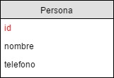

Introduccion
Diseño
DDL(Data Definition Language)
DML(Data Manipulation Language)
Consultas
Joins
Subqueries
Funciones
Roles y Permisos
Conexión desde una aplicación externa
- ¿En qué otros sectores pueden ser utilizadas las bases de datos?
- Basado en el ejemplo del vídeo, ¿Qué usos podría darle a una base de datos?
- ¿Por qué razones utilizaría una base de datos?
- ¿Qué recomendaciones considera importantes para mantener una buena ética profesional y por qué?
- ¿Qué otras recomendaciones brindaría para el correcto uso de una base de datos?
Una cadena de tiendas desea implementar un sistema que permita llevar el control de sus tiendas y de sus clientes.
Se planea contar con la información más importante de cada una de las tiendas de dicha cadena.
Es importante también llevar el control de los clientes, para que las tiendas puedan surtir los pedidos a domicilio a los clientes que lo deseen así como también informarles de las ofertas con las que cuentan.
Cuando el cliente realiza un pedido se debe verificar si la tienda cuenta con stock, si el stock fuera menor al solicitado se le puede sugerir al cliente bajar la cantidad de producto que necesita al que actualmente tienen o sugerirle otra tienda que cuente con el mismo producto. Una vez realizado el pedido el cliente podrá cancelarlo, si el cliente cancela el pedido el stock volverá a subir.
Cuando el stock llega a un punto X, se deberá realizar un pedido a los proveedores, para que no se agote el mismo. Existe una lista grande de proveedores con los que trabaja la cadena. Cada uno de ellos cuenta con su propio catálogo de productos, donde además de mostrar la información propia de cada uno de ellos muestra la cantidad de productos que tienen disponibles y el tiempo promedio que tardan en entregar el producto. Con esta información las tiendas realizan el pedido ya sea al proveedor que despacha el pedido en el tiempo más corto o que maneja el precio más bajo. Al igual que el pedido del cliente, un pedido realizado por una tienda puede ser cancelado. Cuando el pedido es recibido el stock es actualizado en el sistema.
- Definir el objetivo del proyecto.
- Listar los requerimientos más importantes.
- ¿Qué entidades son necesarias para implementar la solución? Mencione sus atributos y el tipo de datos de cada uno de ellos. Mostrar de distinto color la llave primaria. Ej.
 - Realizar el diagrama entidad-relación, tomando en cuenta las relaciones entre cada una de las entidades definidas anteriormente. Mostrar de un color distinto la llave foránea en las tablas que las posean.
Para ello utilizar la siguiente herramienta sql Online rextester.
Deberá comentar su código explicando en dónde se realizó cada uno de los incisos y al terminar enviar el enlace que genera la aplicación al presionar el botón "Save it".
OJO, deberá crear una cuenta en el sitio para poder guardar su trabajo.

- Crear las tablas, con sus relaciones y los tipos de datos correspondientes. Tomar en consideración que la tabla Asignación no debe tener llave primaria. Nota: UQ significa unique key.
- Agregar la llave primaria a la tabla Asignación.
- Agregar el campo salón a la tabla sección.
- Eliminar el campo dirección de la tabla Estudiante.
- Eliminar la tabla Auxiliar y su llave foránea
Para ello utilizar la siguiente herramienta sql Online rextester.
Deberá comentar su código explicando en dónde se realizó cada uno de los incisos y al terminar enviar el enlace que genera la aplicación al presionar el botón "Save it".
OJO, deberá utilizar el link generado en el caso de estudio de la lección DML.
- Mostrar el carnet de los alumnos que estén asignados a la sección C y que la hayan llevado en el primer semestre.
- Mostrar el nombre de las secciones que son impartidas a las 10:30-14:30, a las 9:10-11:40 o a las 16:30-18:00.
- Mostrar los datos de los profesores cuyo DPI sea 238947389327, 389374937281 y 393847538173.
- Mostrar el nombre de las secciones cuya capacidad esté entre 20 y 75 estudiantes.
- Mostrar el nombre de los estudiantes cuyo nombre inicie con L.
- Mostrar los datos de los cursos ordenados alfabéticamente por su nombre.
Para ello utilizar la siguiente herramienta sql Online rextester.
Deberá comentar su código explicando en dónde se realizó cada uno de los incisos y al terminar enviar el enlace que genera la aplicación al presionar el botón "Save it".
OJO, deberá utilizar el link generado en el caso de estudio de la lección DML.
- Mostrar el nombre del estudiante, su carnet, el nombre del curso que están llevando y el semestre en el que lo están llevando. Ordenarlo alfabéticamente descendentemente (Z-A) por el nombre del usuario.
- Mostrar el listado de cursos y sección aunque el curso no tenga sección asignada.
- Mostrar el nombre de los alumnos y el nombre de las secciones aunque la sección no tenga ningún alumno asignado.
- Mostrar el nombre de los profesores y el nombre de la sección, horario de la sección y curso al que pertenece la sección sin importar si el profesor no tiene asignada una sección o si la sección no tiene un profesor asignado.
- Mostrar los datos del profesor, los cursos que imparte, las secciones que imparte y la hora a la que la imparte. Ej.
Para ello utilizar la herramienta SQL Server Management Studio y realizar un documento en Google Docs.
Dicho documento deberá tener un pantallazo de los pasos que realizaron para llevar a cabo los enunciados.
OJO, deberá estar logueado en su cuenta de google para poder guardar el documento.

- Crear un usuario que pueda seleccionar la tabla notas, que no pueda ver el carnet de los estudiantes y que pueda modificar el nombre, apellido y dirección del estudiante. Este usuario debe llamarse estudiante.
- Crear un usuario que pueda modificar el punteo de la tabla notas, ver el nombre de la actividad, ver la tabla profesor, la tabla auxiliar y la tabla cursos. Este usuario debe llamarse auxiliar.
- Crear un usuario que pueda modificar los campos actividad y punteo de la tabla nota, ver la tabla estudiante, auxiliar, curso. Podrá ver la tabla sección pero no podrá ver de ella el idAuxiliar ni el idSeccion. Este usuario debe llamarse profesor.
- Crear un usuario que pueda modificar todas las tablas, pero no pueda modificar sus llaves primarias. Tampoco tendrá permiso de eliminar registros ni tablas. Este usuario debe llamarse administrador.